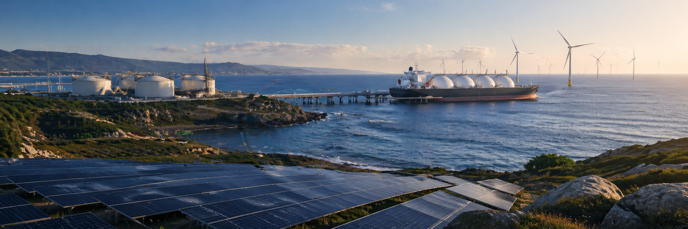

O retrato que sai de Bruxelas
A Comissão Europeia reconhece, no relatório semestral de progresso do REPowerEU, que Portugal foi um dos Estados-Membros que mais cortou a sua exposição direta à energia russa desde a invasão da Ucrânia. O sublinhado vem acompanhado de uma ressalva: o país continua a importar gás natural liquefeito de origem russa, em volumes residuais mas politicamente desconfortáveis e Bruxelas quer ver esse fluxo reduzido a zero antes do prazo de 2027 fixado para a UE.
O dado central, repetido na análise da Direção-Geral da Energia europeia, é que as importações portuguesas de GNL russo caíram para uma fração do que eram em 2022, ano em que o terminal de Sines ainda recebia carregamentos regulares vindos de portos do Báltico. A queda não foi linear, oscilando ao sabor de spreads de preço entre cargas atlânticas e cargas russas, mas a tendência estrutural é inequívoca. Portugal compra hoje, sobretudo, a fornecedores transatlânticos.
Em paralelo, a quota das energias renováveis no consumo final bruto de energia atingiu 36,6%, segundo a leitura mais recente do Eurostat, colocando Portugal entre os seis Estados-Membros com maior peso de renováveis no mix energético total. É um indicador composto, que junta eletricidade, aquecimento e transportes e que serve de balizamento para a meta de 51% definida no Plano Nacional Energia e Clima até 2030.
A geografia nova do gás português
O reordenamento dos fluxos de GNL para Portugal aconteceu em três anos e seguiu de perto o padrão europeu. Os Estados Unidos, que em 2021 representavam uma fração marginal das compras portuguesas, tornaram-se o principal fornecedor único, com o Texas e a Louisiana a alimentar diretamente o terminal de Sines. A Nigéria, fornecedor histórico através do projeto NLNG, viu o seu peso reforçado, beneficiando da proximidade geográfica e da disponibilidade contratual num momento em que o mercado europeu se reconfigurava em pânico.
A composição actual do mix de GNL recebido em Sines reflecte esta arrumação. Os carregamentos americanos lideram com folga, seguidos pela Nigéria e por volumes menores oriundos da Argélia e do Catar. O GNL russo continua a aparecer em alguns carregamentos pontuais, com volumes que oscilaram entre 5% e 8% nos últimos meses, número que a Comissão Europeia considera "compatível com o esforço de transição" mas insuficiente para a fasquia política que pretende fixar.
Esta substituição não foi neutra do ponto de vista do preço. O GNL transatlântico tem custo logístico superior ao gás russo por gasoduto, embora Portugal, por geografia, sempre tenha dependido de GNL para a quase totalidade do seu consumo de gás natural. A diferença, na prática, foi entre carregamentos vindos do Báltico e carregamentos vindos do Golfo do México. Em termos de preço de equilíbrio à porta do terminal, a alternância foi menos disruptiva para Portugal do que para Estados-Membros conectados aos gasodutos russos.
Os 36,6% que mudam o jogo
Falar da dependência energética de Portugal só com base no gás é olhar para uma fatia da economia. O gás natural representa cerca de um quinto do consumo final bruto de energia. O resto distribui-se por petróleo e derivados (que continuam a ser a maior fatia, sobretudo nos transportes), eletricidade, aquecimento, e, em proporção crescente, energia renovável directa.
É aqui que os 36,6% ganham peso. Numa economia em que a maioria do gás natural já não vem da Rússia, o tema verdadeiramente relevante para a competitividade industrial não é tanto a origem do gás, mas o ritmo a que a economia consegue substituir gás por electricidade renovável produzida em território nacional. Cada ponto percentual ganho na fatia de renováveis é um ponto percentual subtraído à exposição cambial e geopolítica futura, independentemente de o gás vir do Texas, da Sibéria ou da Nigéria.
Portugal tem três alavancas concretas neste capítulo. A primeira é a eólica onshore, com um parque maduro mas com saturação geográfica em algumas regiões. A segunda é o solar fotovoltaico, em fase de aceleração intensa, com potência instalada a crescer mais de 20% ao ano nos últimos dois anos. A terceira, mais lenta e mais cara, é o solar de grande escala em leilões competitivos, complementada pela emergência tímida do hidrogénio verde como vector industrial e da eólica offshore como aposta de longo prazo.
O REN21, a OCDE e a Agência Internacional de Energia convergem num ponto: a maior alavanca de redução estrutural da dependência energética portuguesa, hoje, é a digitalização da rede e a aceleração das interligações com Espanha e França. Sem capacidade adicional de transporte transfronteiriço, a expansão renovável esbarra em problemas de despacho, com horas de produção a serem perdidas por falta de escoamento. A REN tem em curso um plano de reforço da rede de transporte com investimentos previstos acima de mil milhões de euros até 2030, mas o ritmo de execução continua condicionado por processos de licenciamento e disponibilidade de equipamento crítico.
Por que Bruxelas quer mais
A pressão da Comissão Europeia sobre o resíduo de GNL russo no terminal de Sines é, em parte, um exercício de coerência política. O REPowerEU foi vendido como um plano de emancipação energética da UE face à Rússia. Cada Estado-Membro que continue a comprar, mesmo que em volumes simbólicos, enfraquece a narrativa do bloco perante interlocutores como Washington, Kiev e os mercados financeiros que valorizam dívida soberana europeia em parte com base na fiabilidade da política comum de segurança energética.
Há, contudo, uma dimensão menos política e mais económica nesta pressão. O mercado de GNL está a passar por uma fase de superoferta esperada para 2026 e 2027, com novos projectos americanos, qataris e australianos a entrarem em produção em simultâneo. A janela em que comprar volumes incrementais a fornecedores não-russos é financeiramente viável é justamente esta. Quem fixar contratos de longo prazo com os Estados Unidos ou com a Nigéria nesta fase compra a preços relativos historicamente baixos. Quem adiar a saída do GNL russo até ao prazo de 2027 corre o risco de a saída coincidir com um novo ciclo de aperto de mercado.
Bruxelas, na sua arquitectura de incentivos, está a tentar coordenar o que de outra forma seria fragmentado. A Galp, a EDP e os grandes consumidores industriais portugueses gerem cada um as suas próprias decisões de aprovisionamento; o Estado, através do MAAC e da DGEG, tem instrumentos de orientação mas não de imposição directa. A Comissão sabe que sem uma calendarização clara e politicamente assumida, a tentação de comprar carregamentos pontuais de GNL russo a desconto continuará a existir sempre que houver volatilidade de preço.
O peso para a indústria portuguesa
O sector industrial português é, à luz dos dados da DGEG, o maior consumidor isolado de gás natural no país. Cerâmica, vidro, cimento, química e pasta de papel concentram a procura. Para estas empresas, a origem do gás é, na prática, indiferente, desde que o preço seja competitivo e o fornecimento previsível. O que interessa, do ponto de vista da gestão, é o custo absoluto e a estabilidade contratual.
É aqui que a transição se torna estratégica e não apenas geopolítica. Empresas como a Cimpor, a Vista Alegre, a Saint-Gobain Sekurit Portugal ou a Navigator estão a avaliar planos de electrificação parcial dos seus processos de calor industrial, com horizontes que cruzam três variáveis: a evolução do preço do gás natural, a disponibilidade de eletricidade renovável a preços competitivos e os incentivos públicos enquadrados no Fundo de Inovação europeu e em linhas específicas do PRR e do Portugal 2030.
| Sector industrial | Peso no consumo de gás | Caminho de descarbonização |
|---|---|---|
| Cerâmica e vidro | Forte | Eletrificação de fornos, hidrogénio para processo de alta temperatura |
| Cimento | Médio-alto | Combustíveis alternativos, captura de CO2, calor solar industrial |
| Química e refinação | Forte | Hidrogénio verde, integração renovável directa |
| Pasta e papel | Médio | Biomassa, eletrificação de utilities, eficiência |
| Agroalimentar | Baixo a médio | Eletrificação, bombas de calor industriais, biogás |
O dossier menos discutido no debate público é o da factura energética das PME. Para uma empresa com consumo industrial intermédio, com facturação anual entre 5 e 50 milhões de euros, a oscilação de preço do gás entre 2022 e 2024 representou variações de margem operacional na ordem de 200 a 400 pontos base, dependendo da intensidade energética da produção. Empresas que tinham contratos indexados a preços spot foram apanhadas em cheio. Empresas que tinham contratos longos a preço fixo fechado em 2021, ou que conseguiram cobrir parte da exposição com PPAs solares, atravessaram o choque com margens menos comprimidas.
A lição é gerencial, não geopolítica. A diversificação de fornecedores é importante, mas a verdadeira proteção, ao nível da empresa individual, vem da diversificação dos próprios vectores energéticos: contratualizar parte do consumo eléctrico via PPA com produtor renovável, electrificar o que for tecnicamente possível, manter optionality entre gás e energia eléctrica em equipamentos críticos. Quem fez este trabalho nos últimos três anos chegou a 2026 com uma estrutura de custos energéticos mais previsível.
O capital que falta
A transição energética portuguesa, no momento em que está, é menos um problema de tecnologia disponível e mais um problema de capital alocado. Os números são públicos. O Portugal 2030 mobiliza cerca de 23 mil milhões de euros em fundos europeus para o ciclo até 2029, com o eixo "Transição Climática e Sustentabilidade" a absorver uma fatia relevante. O PRR canaliza investimentos directos para hidrogénio, eficiência energética em edifícios e mobilidade eléctrica. A linha Banco Europeu de Investimento mantém envelopes substanciais disponíveis para projectos de capacidade renovável, transmissão e armazenamento.
O que falta, na prática, é o capital privado complementar e a engenharia financeira que permite os projectos chegarem ao terreno. Um projecto solar de 100 MW exige cerca de 70 a 90 milhões de euros de CAPEX inicial. Um projecto de hidrogénio verde com a mesma capacidade exige múltiplos disso. O custo de capital português para estes projectos, comparado com o alemão ou holandês, ainda inclui um prémio de risco país que, embora muito reduzido face à década passada, continua a tornar marginalmente menos atractivos os investimentos. O resultado é que muitos projectos aprovados em sede de regulamento ficam parados à espera do bloco de financiamento que feche a equação.
É aqui que a discussão sobre o GNL russo se cruza com uma questão mais ampla. Cortar os últimos pontos percentuais de gás russo é importante por sinalização política. Acelerar a substituição estrutural de gás natural por electricidade renovável é importante pela competitividade industrial portuguesa nos próximos quinze anos. As duas agendas não se substituem uma à outra, mas competem por atenção política, por recursos humanos qualificados e por capital.
O que isto significa para a sua empresa
Para a maioria das empresas portuguesas, a notícia da pressão de Bruxelas sobre o GNL russo é macro. Não muda nada amanhã na factura. O que pode mudar muito, no horizonte de três a cinco anos, é a estrutura de custos energéticos do tecido industrial e por arrasto, a posição competitiva de quem usa mais energia na produção.
Há três decisões que valem a pena ser revistas, neste momento, em qualquer empresa com consumo energético material. A primeira é o mix contratual. Empresas que ainda têm 100% do consumo eléctrico exposto a preços de mercado deixaram de ter razão técnica para o fazer; o mercado de PPAs de longo prazo amadureceu e há contrapartes nacionais e ibéricas dispostas a fechar contratos de cinco a quinze anos a preços fixos competitivos. A segunda é a auditoria séria do potencial de electrificação. Não auditoria de fachada para responder a inquéritos de sustentabilidade, mas estudo de engenharia que identifique processos onde substituir gás por electricidade é tecnicamente viável, com retorno calculado, com cronograma realista. A terceira é o aproveitamento dos instrumentos de financiamento público actualmente disponíveis. Linhas do PRR para descarbonização industrial, avisos do Portugal 2030 para eficiência energética, garantias do Banco de Fomento para investimentos em transição, fundos do BEI e do Fundo de Inovação europeu para projectos maiores: todos estão activos, todos têm prazos e todos exigem uma estruturação técnica que, em muitas PME, ainda não está feita.
A energia barata e abundante deixou de ser um pressuposto para a generalidade das empresas europeias. Em Portugal, com a dotação solar e eólica que o país tem, esta restrição é menos severa do que em Estados-Membros do norte e do centro da Europa. Quem usar a próxima janela de financiamento público e a próxima fase de maturação tecnológica, para reposicionar a sua estrutura energética, terá uma vantagem mensurável de margem operacional na próxima década. Quem esperar que a transição venha por inércia regulatória, ficará a comprar o que sobrar do mercado, ao preço que houver, com a previsibilidade que restar.
Comentários, correções ou contrapontos são bem-vindos: geral@opencapital.pt